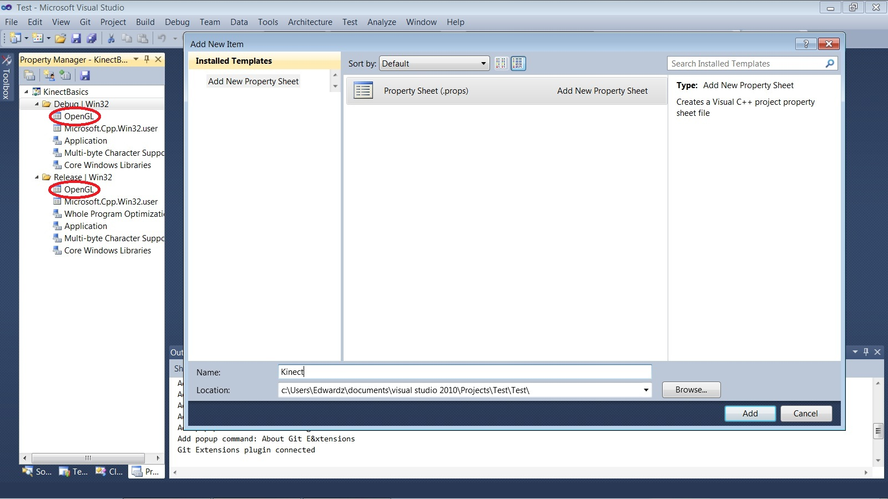
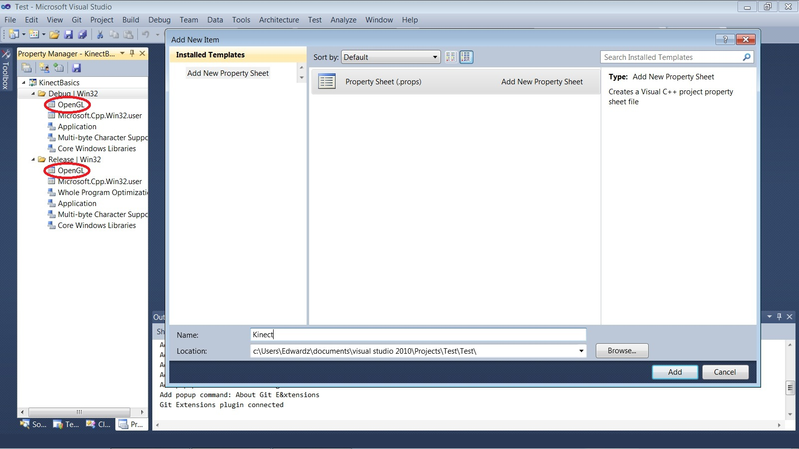

Kinect v2 SDK C++ - 0. Setup
This series of tutorials is intended for C++ programmers who want to use Microsoft's Kinect SDK. There will be as little Windows code as possible. We will be using OpenGL for graphics.
Goals: Ensure you have the necessary components for coding with Kinect. Set up a Visual Studio
project with the proper build configurations.
Source: 1_Basics.zip
Prerequisites:
- Windows (this is the Windows SDK, after all)
- A Kinect (preferably Kinect for PC)
- Visual Studio (some recent version)
- Experience with C
- Familiarity (or willingness to learn) OpenGL
Click here for SDL Version of 0. Setup
Installing GLUT
Most windows systems do not come with GLUT. GLUT is an old but widely used system for windowing and handling events that is commonly used with OpenGL.- Download and unzip the MSVC freeglut binaries from http://www.transmissionzero.co.uk/software/freeglut-devel/
- Copy the contents of the Include/ and Lib/ directories you just
unzipped into the appropriate Windows SDK directories. e.g.
- C:/Program Files/Microsoft SDKs/Windows/v7.0A/Include/ and C:/Program Files/Microsoft SDKs/Windows/v7.0A/Lib/ for Visual Studio 2010
- C:/Program Files/Windows Kits (x86)/8.1/Include/um/ and C:/Program Files (x86)/Windows Kits/8.1/Lib/winv6.3/um/ for Visual Studio 2012+
- Copy bin/x64/freeglut.dll into C:/Windows/System32 and bin/x86/freeglut.dll into C:/Windows/SysWOW64. If you have a 32-bit system, just move bin/x86/freeglut.dll into C:/Windows/System32
Creating a Kinect Project
Open up Visual Studio and start a new Empty Project. Click File > New > Project...; then select C++ > General > Empty Project. Name it appropriately.
To configure the build rules (i.e. includes and libs) we will use the Property Manager. This will allow us to save the configurations to separate files so that we can use them again later.
Go to View > Property Manager. This will open up a pane in one of the subwindows in Visual Studio containing build rules.

In the Property Manager, right click on the project name and select Add New Project Property Sheet; name it "OpenGL". Create another one named "KinectSDK". You should see several new items appear under "Debug" and "Release" with the names of your new Property Sheets. Property Sheets are files (extension .props) that contain build configuration data. For modularity, we will create one for our OpenGL info and one for our Kinect SDK info.
 

Right-click the Kinect Property Sheet and click Properties.
Note that to add Include and Library Directories, you can either just
type into the box, or you can click the dropdown, select <Edit>,
and enter the location in the resulting dialog. This method lets you
manage multiple directories easily, as well as lets you browse for the
exact directory (if you don't use environment variables like
KINECTSDK20_DIR)
Right-click the OpenGL Property Sheet and click Properties. Under Linker > Input > Additional Dependencies, add the following:
opengl32.lib
glu32.lib
freeglut.lib

That's it for now - you have a project that is ready for some code.